Capítol 1 Teoria Setmana 1
Discussió sobre:
- Logística del curs:
- Teoria i seminaris: Horaris
- Canals: Aula global, Web de curs
- El PDA
- Avaluació: Participació seminaris (15%), Treball (35%), Examen Final (50%)
- Disseny del curs: Conceptes, dades, programari
- Eina de treball: R
1.1 Avaluació
1.1.1 El treball
Consulta la Guía del Treball de fi de curs.
Consulta a l’Aula global els Exemples de treballs d’anys anteriors.
1.1.2 Exàmens
Consulta a l’Aula global els Exàmens d’anys anteriors.
1.1.3 Participació
A l’aula d’informàtica es resoldran deures a classe.
A la secció de la Llista de deures 12, es publicaràn fins a 3 problemes que s’hauràn d’entregar de forma individual i es resoldrà a classe.
1.2 Bibliografia
- Mètodes aplicats a Ciències polítiques
- AnalizaR Datos Políticos. Bookdown. 2020.
- Quantitative Politics with R. Bookdown. November 2019.
- Lab Guide to Quantitative Research Methods in Political Science, Public Policy & Public Administration. Bookdown
- Quantitative Research Methods for Political Science, Public Policy and Public Administration: 4th Edition With Applications in R. Bookdown
- General R y Estadística
- R Markdown: The Definitive Guide. Chapman & Hall/CRC; 2020.
- R Graphics Cookbook, O’Reilly Media, Inc. 2nd ed.; 2020.
- Data Visualization with R. 2018.
- R for Data Science. O’Reilly; 2017. (Castellano)
- An Introduction to Statistical Learning with applications in R. Springer; 2017.
1.3 Introducció conceptes Estadística
Introducció a l’assignatura. Llibres, la nostra calculadora de butxaca. Interacció entre Teoria (preguntes), Dades, Estadística (conceptes, no fórmules). Un exemple, per començar a rodar.
1.4 Gender gap, at birth
Question: Is there a gender birth rate?. At birth, probability of a boy equal to the probability of a girl?
What CIA says on this issue? (Wikipedia)
CIA estimates that the current world wide sex ratio at birth is 107 boys to 100 girls, 107/207= 0.5169082
1.5 With Arbuthnott’s data, collected on years 1629 to 1710
John Graunt was the first person to compile data that showed an excess of male births over female births. He also noticed spatial and temporal variation in the sex ratio, but the variation in his data is not significant. John Arbuthnott was the first person to demonstrate that the excess of male births is statistically significant.
John Arbuthnot (1710) used these time series data on the ratios of male to female christenings in London from 1629-1710 to carry out the first known significance test, comparing observed data to a null hypothesis.
Arbuthnot, J. 1710. An argument for divine providence. Philosophical Transactions 27:186-190.
dat<- read.table("http://84.89.132.1/~satorra/dades/arbuthnot.txt", header=TRUE)
head(dat)## year boys girls
## 1 1629 5218 4683
## 2 1630 4858 4457
## 3 1631 4422 4102
## 4 1632 4994 4590
## 5 1633 5158 4839
## 6 1634 5035 4820dim(dat)## [1] 82 3names(dat)## [1] "year" "boys" "girls"attach(dat)## The following objects are masked from dat (pos = 5):
##
## boys, girls, year## The following objects are masked from dat (pos = 8):
##
## boys, girls, year## The following objects are masked from dat (pos = 33):
##
## boys, girls, yearmean(boys)## [1] 5907.098mean(girls)## [1] 5534.646mean(boys/girls)## [1] 1.070748total<- boys+girls
plot(year,total, col="blue", main="total birth along the years")
mean(boys/(boys+girls))## [1] 0.5169751require(stats) # for lowess, rpois, rnorm
lines(year,lowess(total,f=1/6)$y, lty=3, lwd=4)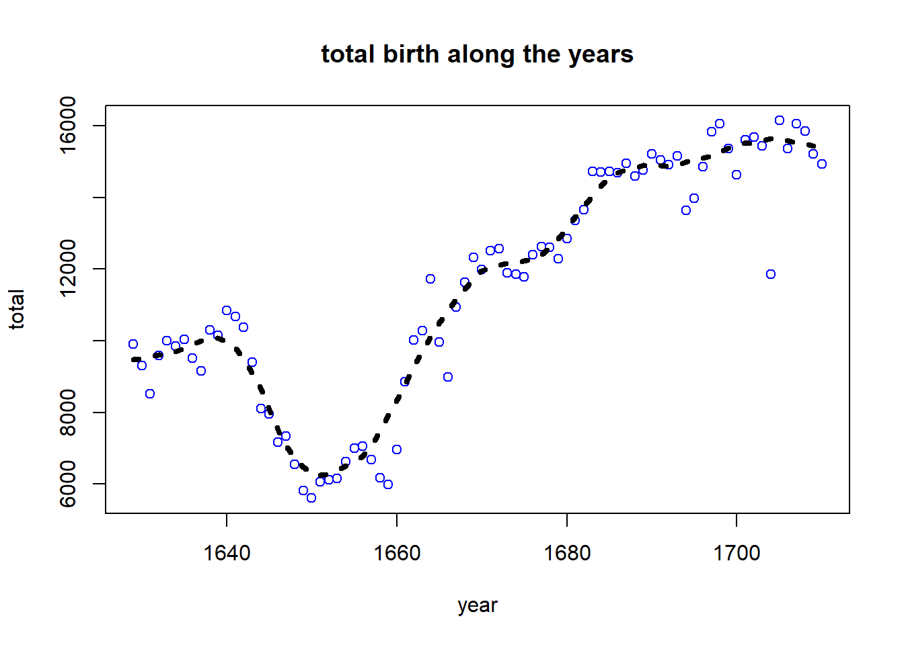
boxplot(boys, girls, names=c("boys","girls"), col=c("blue","magenta"))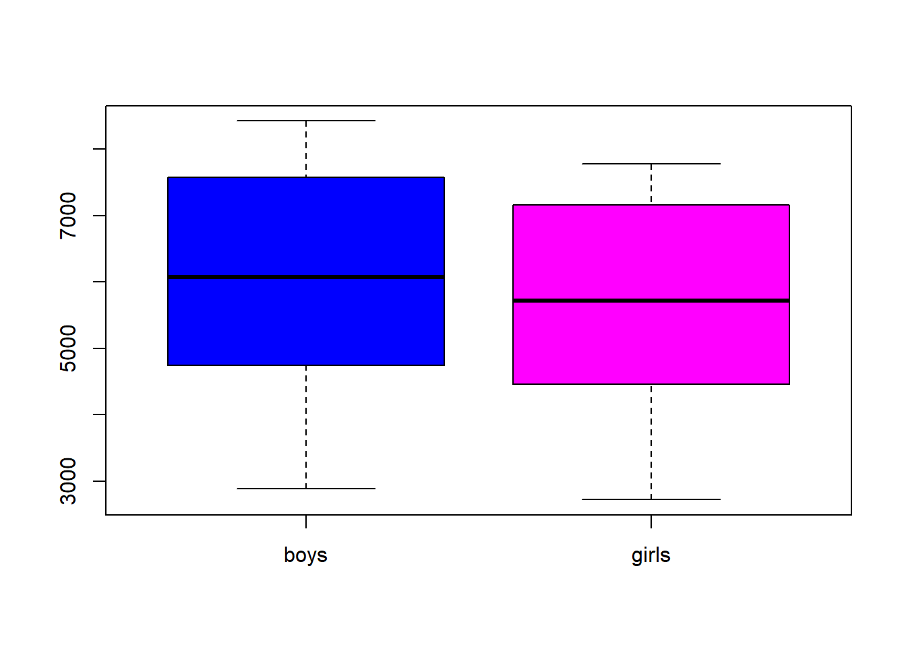
boysrate<- boys/(boys+girls)
plot(year, boysrate, ylim = c(.49,.53), col="blue")
abline(h=0.5, col="red", lwd=3, lty=3)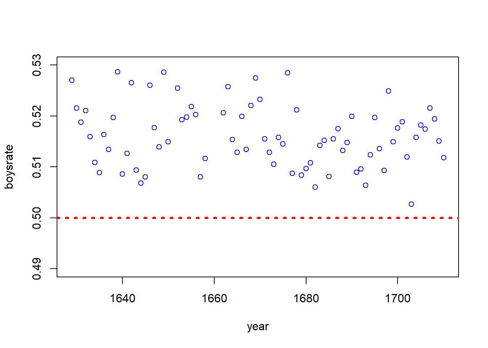
t<- (mean(boysrate) - 0.5)/(sd(boysrate)/sqrt(length(boysrate)))
t## [1] 21.29243t.test(boysrate, mu=0.5)##
## One Sample t-test
##
## data: boysrate
## t = 21.292, df = 81, p-value < 2.2e-16
## alternative hypothesis: true mean is not equal to 0.5
## 95 percent confidence interval:
## 0.5153889 0.5185614
## sample estimates:
## mean of x
## 0.5169751plot(year, boysrate, ylim = c(.49,.53), col="blue", main="Boysrate values with 95% confidence bound (green lines) ")
abline(h=0.5, col="red", lwd=3, lty=3)
# Intervals
abline(h=mean(boysrate), col="blue", lwd=.8)
lines(year, rep(0.5153889, length(year)) , lty = 'dashed', col = 'green', lwd=3)
lines(year, rep(0.5186, length(year)) , lty = 'dashed', col = 'green', lwd=3)
# add fill
n<- length(year)
polygon(c(rev(year), year), c( rev(rep(0.5153889, n )), rep(0.5186, n )), border = NA)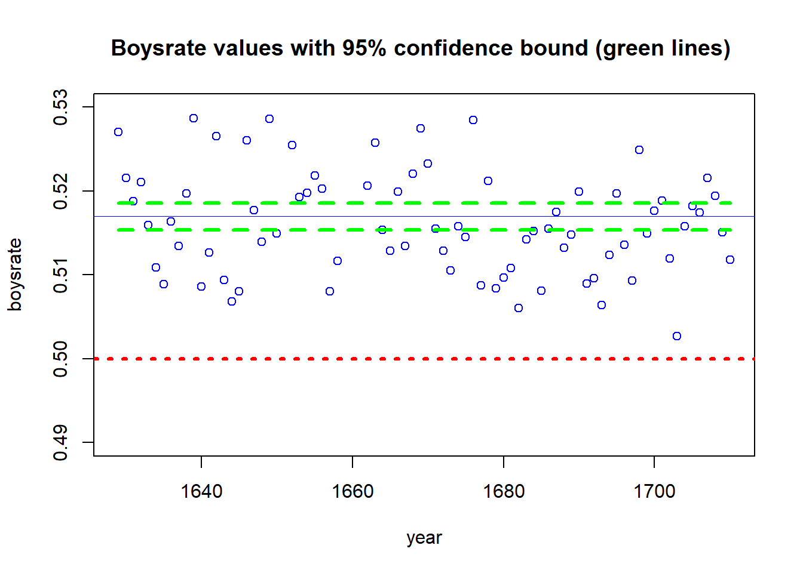
1.5.1 Now with recent USA’s data, present day birth records in the United States
source("http://www.openintro.org/stat/data/present.R")
head(present)## year boys girls
## 1 1940 1211684 1148715
## 2 1941 1289734 1223693
## 3 1942 1444365 1364631
## 4 1943 1508959 1427901
## 5 1944 1435301 1359499
## 6 1945 1404587 1330869dim(present)## [1] 63 3mean(present$boys/(present$boys+present$girls))## [1] 0.512516boysrate<- present$boys/(present$boys+present$girls)
t.test(boysrate, mu=0.5)##
## One Sample t-test
##
## data: boysrate
## t = 147, df = 62, p-value < 2.2e-16
## alternative hypothesis: true mean is not equal to 0.5
## 95 percent confidence interval:
## 0.5123458 0.5126862
## sample estimates:
## mean of x
## 0.5125161.6 Distribució d’una variable, distribució normal, altres distribucions
Distribució d’una variable quantitativa (variable numérica): anàlisi de variància.
library(foreign)
data= read.spss( "http://84.89.132.1/~satorra/dades/PAISOS.SAV", use.value.labels = TRUE, to.data.frame = TRUE )
attach(data) ## The following objects are masked from data (pos = 5):
##
## AGRICULT, ALFAB, CALORIES, CONT, DIARIS, ESPVIDA, HABMETG, IDH, INDUST, NIVELL,
## PAIS, PIB, SANITAT, TV## The following objects are masked from data (pos = 8):
##
## AGRICULT, ALFAB, CALORIES, CONT, DIARIS, ESPVIDA, HABMETG, IDH, INDUST, NIVELL,
## PAIS, PIB, SANITAT, TV## The following objects are masked from data (pos = 32):
##
## AGRICULT, ALFAB, CALORIES, CONT, DIARIS, ESPVIDA, HABMETG, IDH, INDUST, NIVELL,
## PAIS, PIB, SANITAT, TVnames(data)## [1] "IDH" "NIVELL" "PAIS" "ESPVIDA" "PIB" "ALFAB" "CONT" "CALORIES"
## [9] "HABMETG" "DIARIS" "TV" "SANITAT" "AGRICULT" "INDUST"ESPVIDA## [1] 46.4 52.1 47.5 39.0 50.7 53.5 44.9 50.2 55.6 43.5 47.5 56.5 45.6 47.3 51.0 46.5 60.4 46.0
## [19] 47.4 65.2 50.4 55.7 48.0 66.7 48.9 45.0 65.5 55.0 47.6 49.4 61.5 56.0 68.5 44.5 56.0 51.5
## [37] 71.9 67.7 53.7 60.5 63.6 51.0 62.7 62.1 70.4 59.4 49.3 66.3 56.0 64.7 67.6 55.8 64.8 63.3
## [55] 69.6 57.5 68.8 51.3 67.9 69.9 66.4 65.2 70.3 69.3 66.0 73.6 71.2 70.0 58.8 67.8 69.0 67.1
## [73] 71.1 76.3 66.5 70.9 70.0 71.5 67.5 71.5 73.6 64.9 72.8 76.0 71.3 73.8 70.2 66.3 67.6 62.9
## [91] 70.8 70.5 71.7 69.0 72.5 70.8 71.6 67.5 53.5 70.0 72.0 72.1 75.6 69.6 71.1 77.6 74.6 69.7
## [109] 71.6 77.0 73.1 75.5 75.3 76.5 77.6 78.6 70.5 74.8 77.6 76.2 74.9 77.5 77.4 77.4 76.4 76.9
## [127] 73.8 75.7 76.2 76.0 76.0 78.2 76.9 75.3 78.2 79.5 75.7 78.0 72.0 76.1 68.5 66.0 63.1 67.1
## [145] 75.3 63.7 71.1 43.5 50.2 65.2 56.6 57.6 52.0 53.0 46.5 51.6 55.4 47.0 74.2 48.3summary(ESPVIDA)## Min. 1st Qu. Median Mean 3rd Qu. Max.
## 39.00 55.67 67.60 64.50 72.58 79.50hist(ESPVIDA, col="blue")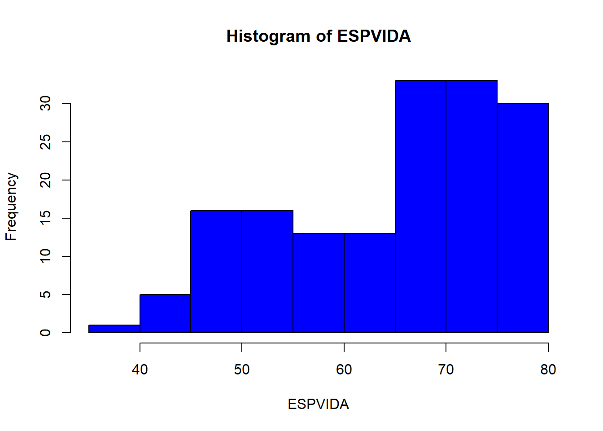
boxplot(ESPVIDA, col="blue")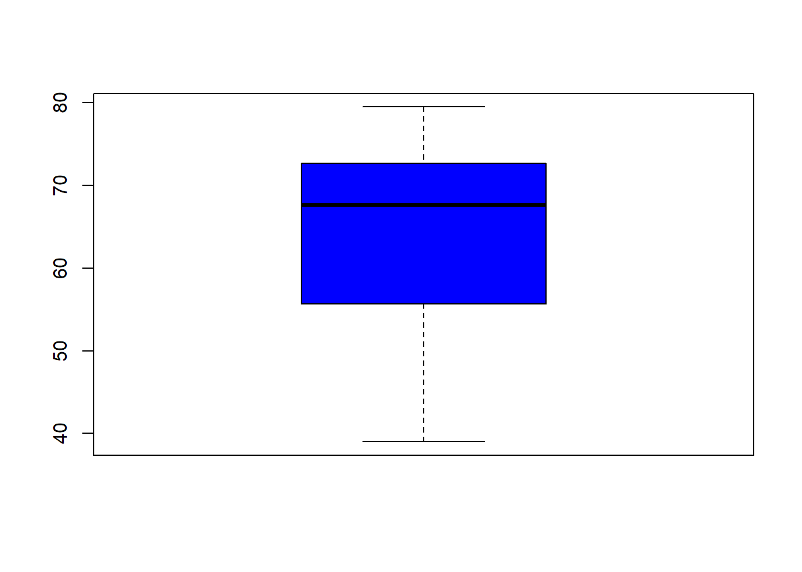
1.6.1 Valor estandarditzat d’una variable
# variable centrads
head(ESPVIDA - mean(ESPVIDA))## [1] -18.10437 -12.40437 -17.00437 -25.50437 -13.80437 -11.00437# variable estandarditzada
head((ESPVIDA - mean(ESPVIDA))/sd(ESPVIDA))## [1] -1.715521 -1.175405 -1.611288 -2.416725 -1.308065 -1.042744# Amb R
head(scale(ESPVIDA))## [,1]
## [1,] -1.715521
## [2,] -1.175405
## [3,] -1.611288
## [4,] -2.416725
## [5,] -1.308065
## [6,] -1.0427441.6.2 Distribució Normal
We now investigate the probability distribution that is most central to statistics: the normal distribution. If we are confident that our data are nearly normal, that opens the door to many powerful statistical methods. Here we’ll describe this distribution and assess the normality of our data.
Bitllet de 10 marcs: Carl Friedrich Gauss (1777 - Gotinga;1855)
1.6.2.1 Distribució de notes d’estudiants
Veure exemple enllaç.
1.6.3 Exemple amb la variable diners en butxaca (estudiants de MQ III)
Dades_enq_paper (diners en butxaca, genere):
datadiners<-read.table("http://84.89.132.1/~satorra/dades/ECP2019diners.txt", header=TRUE)
names(datadiners)## [1] "diners" "genere"attach(datadiners) ## The following objects are masked from datadiners (pos = 5):
##
## diners, genere## The following objects are masked from datadiners (pos = 8):
##
## diners, genere## The following objects are masked from datadiners (pos = 32):
##
## diners, generesummary(diners)## Min. 1st Qu. Median Mean 3rd Qu. Max.
## 0.000 1.000 7.995 16.249 21.625 100.000boxplot(diners)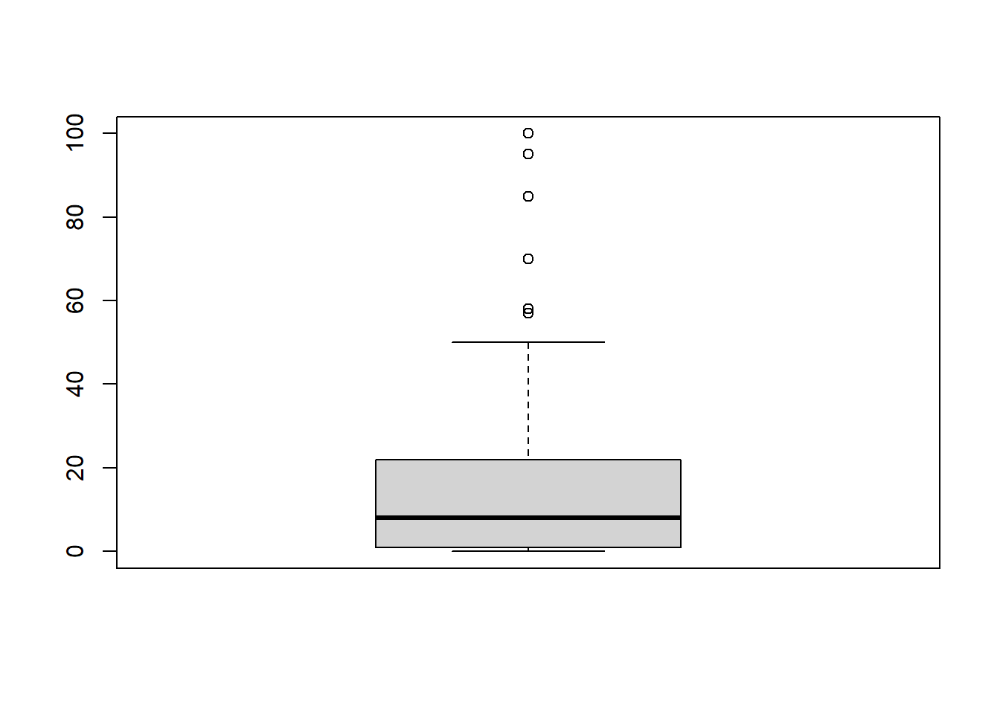
hist(diners)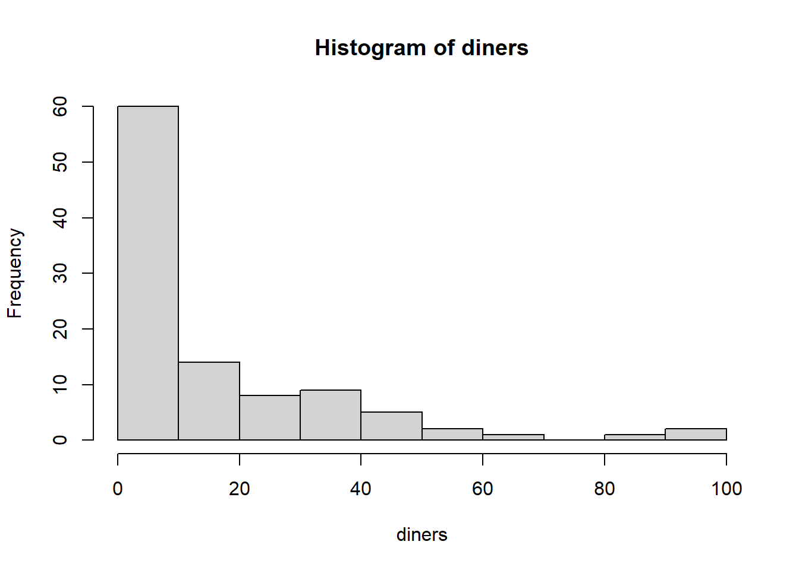
boxplot(diners ~ genere, col=c("blue","violet"))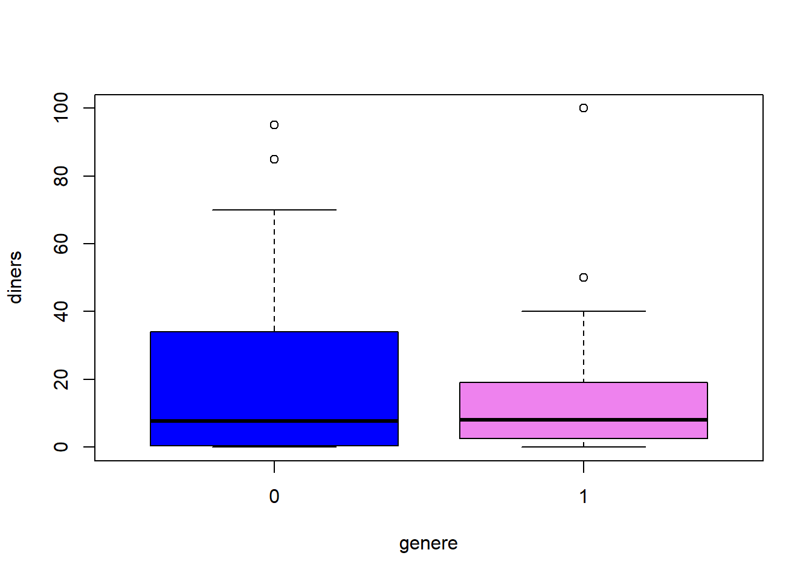
aggregate(diners, list(genere), mean) ## Group.1 x
## 1 0 18.30667
## 2 1 13.30833Diners en butxaca: distribució normal?
qqnorm(datadiners$diners)
qqline(datadiners$diners ,col="red", lwd=3)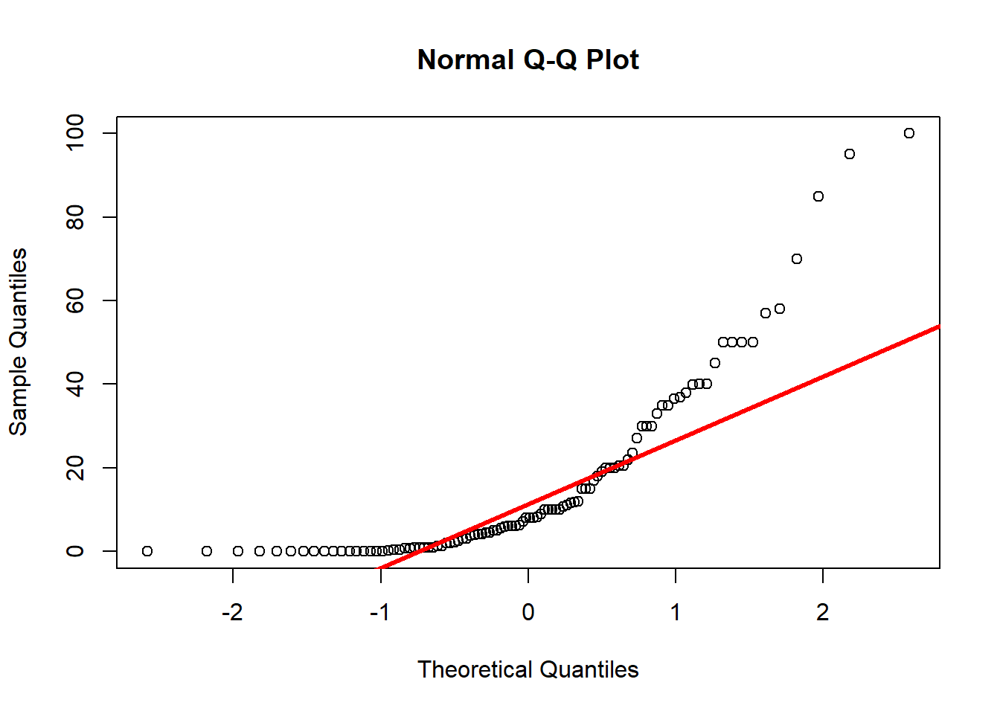
1.6.3.1 Log de diners en butxaca: distribució normal?
qqnorm(log(datadiners$diners+ .1))
qqline(log(datadiners$diners +.1),col="red", lwd=3)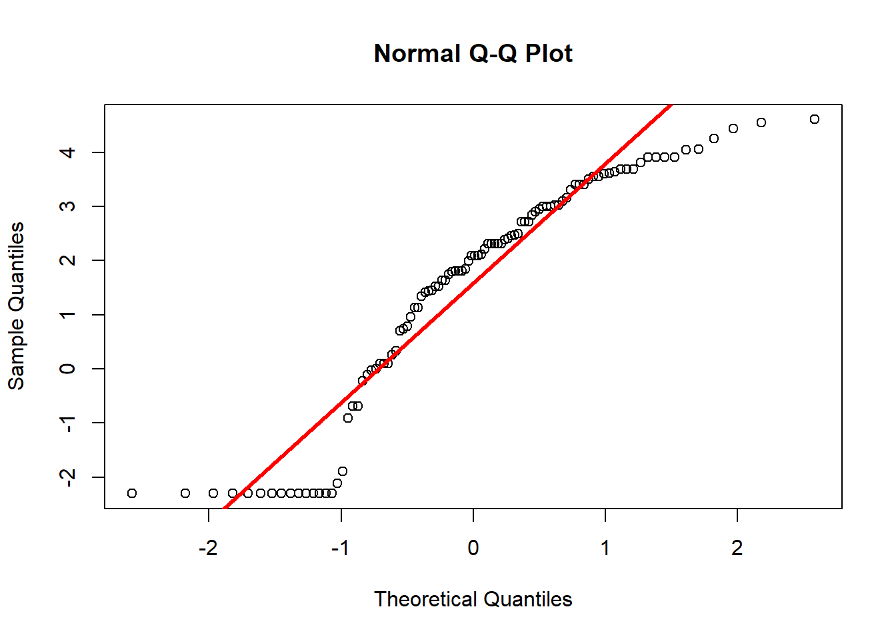
1.6.3.2 log de diners en butxaca (no zero): distribució normal?
ind<- datadiners$diners > 0
qqnorm(log(datadiners$diners[ind]))
qqline(log(datadiners$diners[ind]),col="red", lwd=3)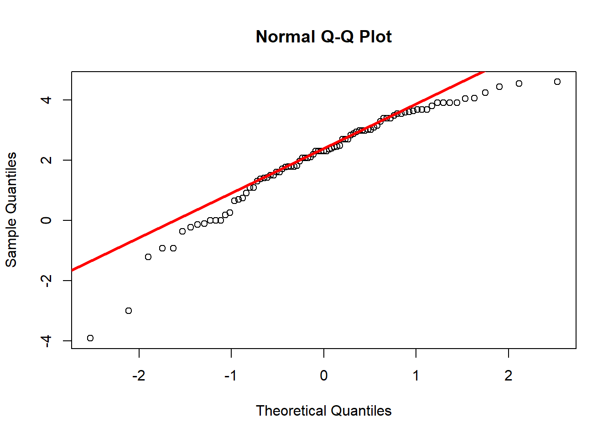
1.6.4 Altres distribucions univariants
Distribucions univariants en R
1.6.4.1 Variables quantitatives i qualitatives
Dades Enquesta Socrative
d<-matrix(scan("http://84.89.132.1/~satorra/dades/ECP2019enquestasocrativeG1.txt", what="character",skip=1),ncol=20,byrow=TRUE);
data<-d[-1,];
colnames(data)<-d[1,];
table(data[,4]); ##
## av cd mai
## 12 13 7round(100*prop.table(table(data[,4], data[,1]),2),1); ##
## 0 1
## av 42.1 30.8
## cd 36.8 46.2
## mai 21.1 23.1pie(table(data[,4]), main="fer-se el llit")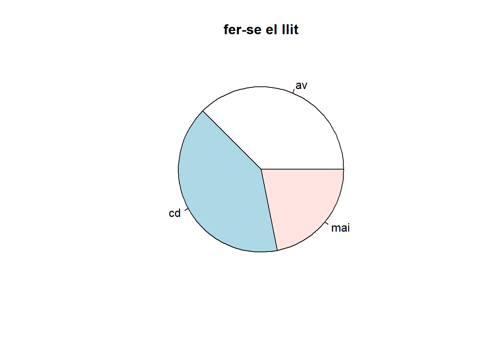
## interess assignatura
aggregate(as.numeric(data[,7]), list(data[,4]), mean)## Group.1 x
## 1 av 6.625000
## 2 cd 5.923077
## 3 mai 4.571429## tirada de dues monedes
table(data[,14])##
## 0 1 2 3
## 2 11 15 4round(prop.table(table(data[,14])),2)##
## 0 1 2 3
## 0.06 0.34 0.47 0.12